The problem
The dashboard assumed forward planning, leaving the main screen empty ~80% of the time — while mobile users open the app to pay now, last-minute.
The work
Redesigned Melio's mobile web dashboard around task-optimized cards, a new top-tab navigation, and one adaptive layout for standalone and partner environments.
The outcome
User engagement improved by 7%, more users initiated payments, and approval-workflow usage grew by 4%.
Overview
Melio is an accounts payable tool for small businesses, processing $20B annually — letting them pay vendors, suppliers, and contractors flexibly to optimize cash flow. This project adapted the desktop dashboard redesign into a mobile-first experience — pivoting to a task-optimized card structure, with dedicated mobile components, revamped navigation for partner-embedded contexts, and key data fields prioritized for on-the-go scannability.
My role
As part of a larger initiative, I worked within a dedicated mobile web squad — 5 developers, a PM, a Design Manager, and 2 other designers — leading the mobile platform responsibilities:
- •UX mobile research and mobile web product design.
- •New components for design and development.
- •Adapting the new layout for seamless integration on the mobile web platform.
The assumption
The dashboard was built around forward planning — an inbox of invoices ordered by urgency, on desktop and mobile alike. Real user behavior didn't match the assumption:
The main screen sat empty 80% of the time.
The intent gap
Users don't plan ahead on mobile — they open the app to pay now, last-minute, searching for a known vendor.

Desktop-first, urgency-ordered inbox.

The Inbox — empty 80% of the time.
The Objective
Shift the mobile dashboard from a forward-planning model to a fast, immediate "pay-now" workflow.
The challenge:
- •Prioritize essential user information on mobile, condensing desktop data for improved clarity.
- •Design a single adaptive layout for standalone and partner environments that stays scannable — without losing the primary focus on the core payment action.
The approach: structural adaptation over cosmetic shrinking.
The Solution
Structure over shrinking
The redesign started with IA and conceptual modeling — remapping the information architecture around mobile intent before touching visual polish.
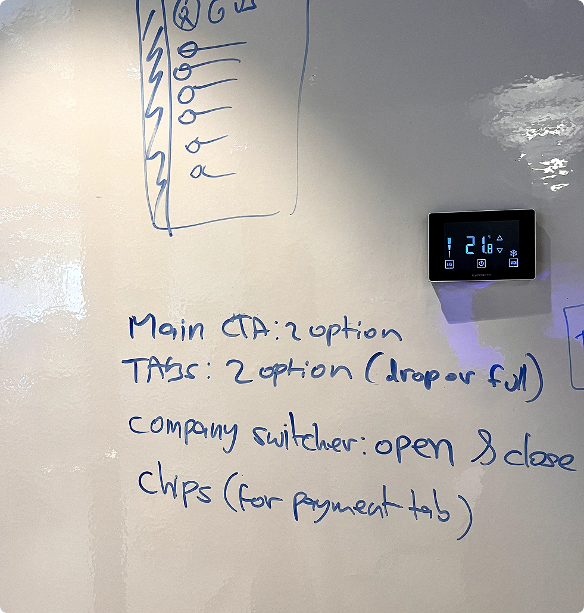
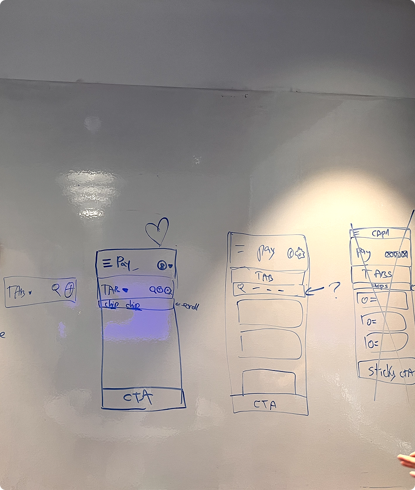
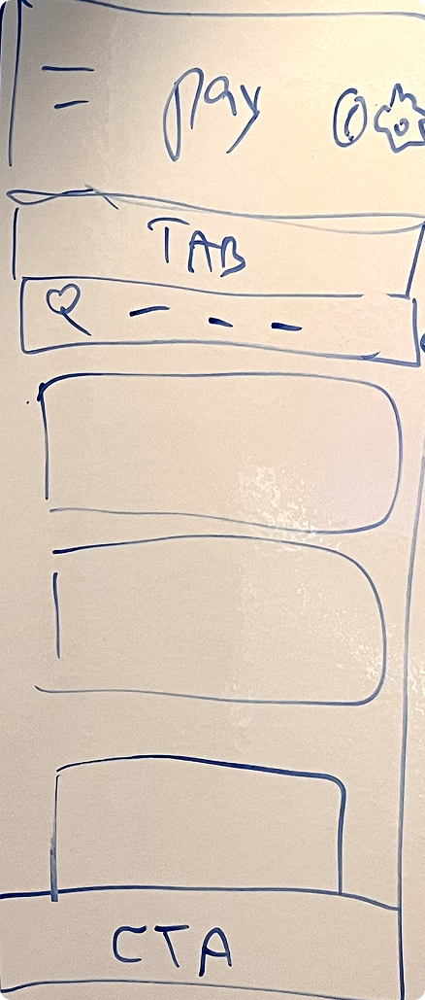
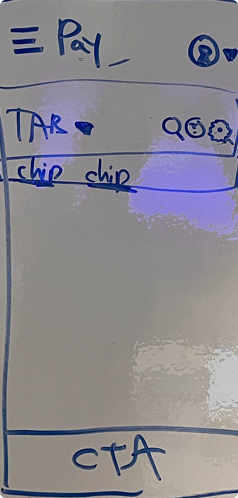
Execution/01
Sketching the navigation
Early concepting explored how far navigation could be simplified for small screens and partner-embedded contexts.
Navigation sketching
Click to enlarge.

Execution/02
Cards that know their job
A multi-column desktop table can't scale down without destroying readability. I broke the tables into modular mobile cards — the hierarchy inside each card shifts with the tab's user goal: Bills for tap-to-pay, Payments for tracking, Vendors for ad-hoc payment. Secondary data nests inside a card dropdown, keeping the layout scan-ready.
Mobile tab
Target task
Primary focus
Interaction model
Bills
Pay a single invoice before its deadline
Due date (urgency) and total amount
Direct tap-to-pay path
Payments
Track money in motion on the go
Status indicator and delivery method
High-visibility tracking states
Vendors
Initiate an ad-hoc payment without an invoice
Vendor name and outstanding balance
One-tap payment initiation
Secondary data (partial bank details, internal notes) was nested inside an interactive card dropdown, keeping the initial layout clean and scan-ready.


Execution/03
Analyzed & Iterated
Layout explorations ran against real constraints — testing card styles and navigation patterns across the Melio standalone and partner dashboards.
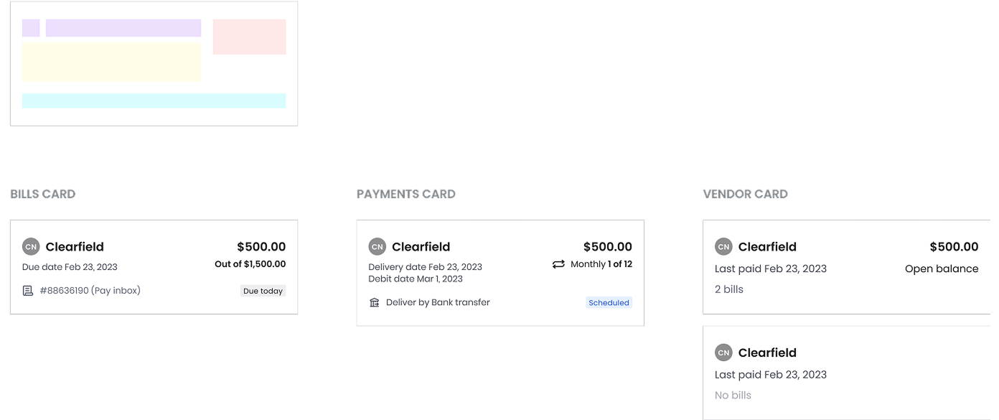
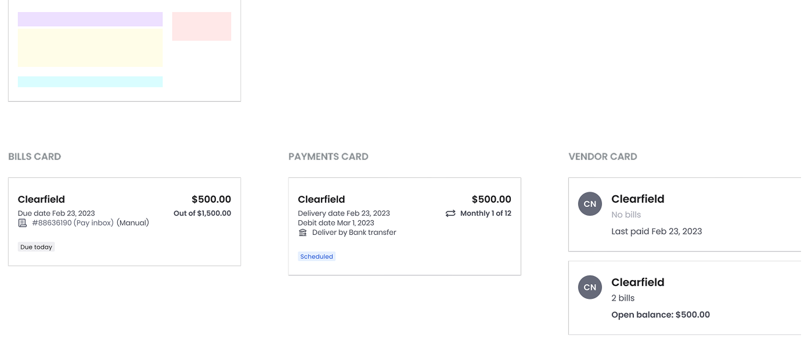
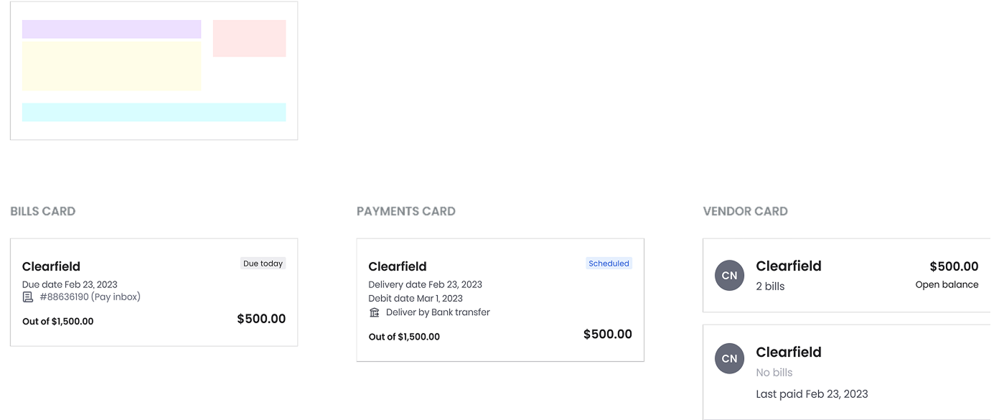
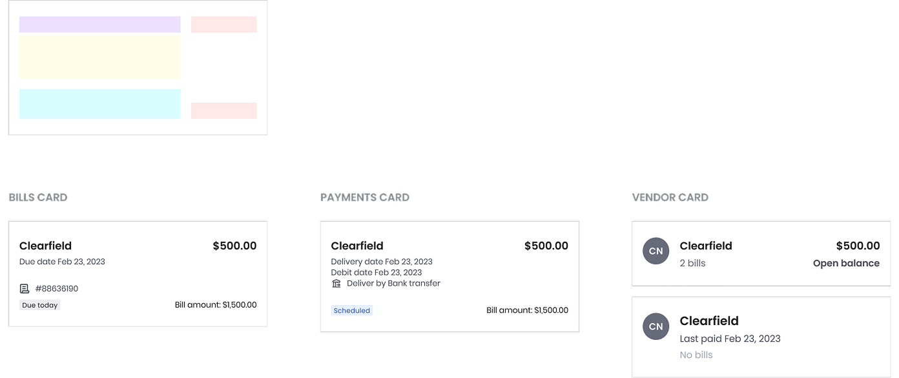
Card layout sketching
Click to enlarge.


Finals
Validation
A/B testing infrastructure wasn't fully integrated for this mobile web release, so validation relied on upfront usability testing — which surfaced the exact failures:
01
Navigation overload
Multiple stacked menus felt overwhelming and "too much" on small screens.
02
Low discoverability
The bottom tab bar wasn't prominent enough, and the new avatar menu lacked clarity.
03
Switcher misalignment
Only 18% of users have multi-org accounts — and they rarely switch profiles while on mobile. Yet the switcher kept its prominent desktop placement, occupying prime real estate.


Melio dashboard vs. Partners dashboard
Click to enlarge.
Key decisions
01
Tabs on top
A bottom bar inside partner apps caused layout conflicts — top tabs separate Melio from the host wrapper.
02
Switcher, demoted
Moved from prime placement into the Profile menu, reclaiming real estate for payments.
03
Cards, not tables
Desktop tables can't scale down — modular cards shift the hierarchy to match each tab's user goal.
Screens by area
Click any screen to enlarge.

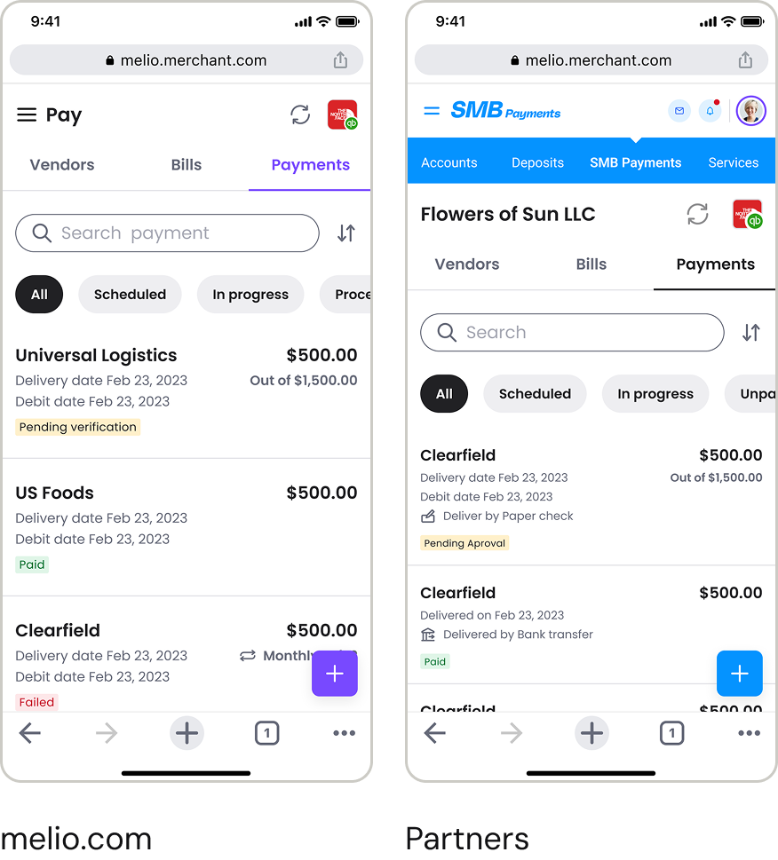
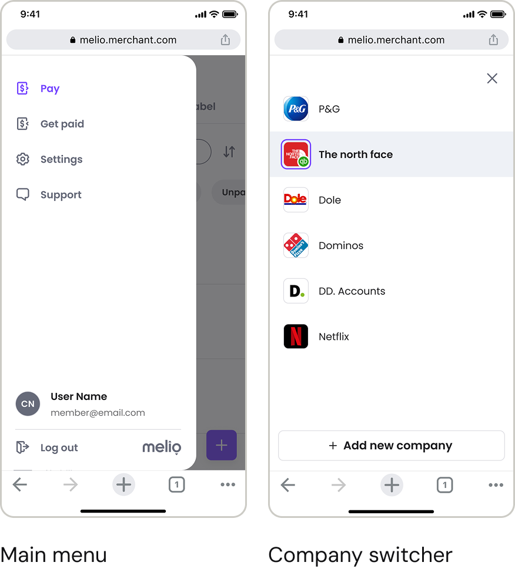
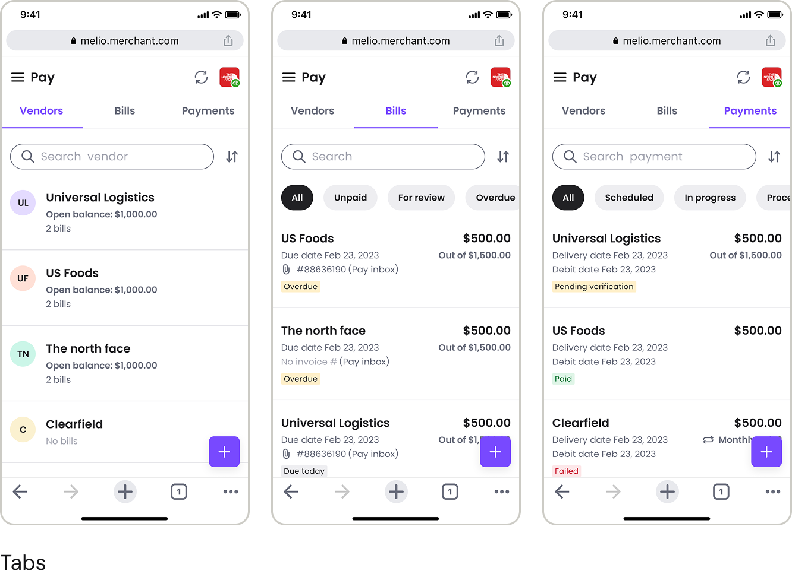
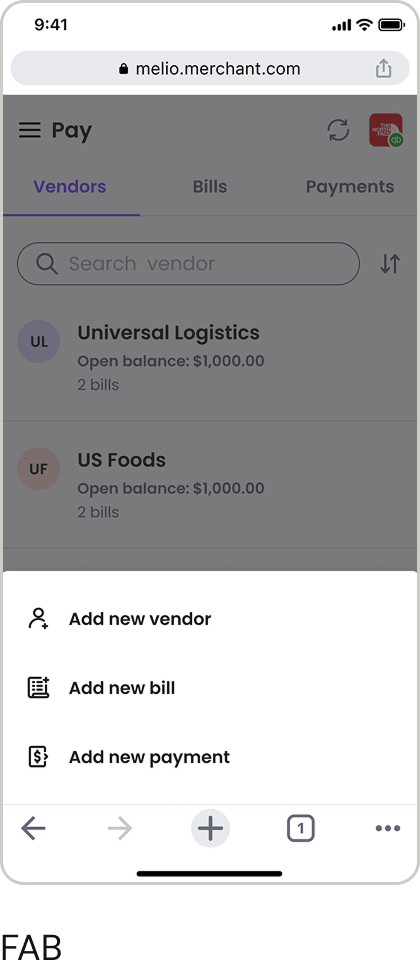
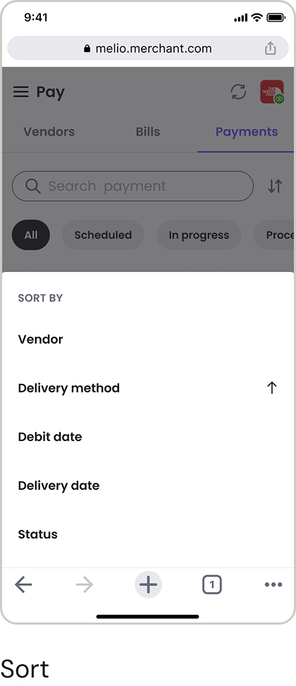


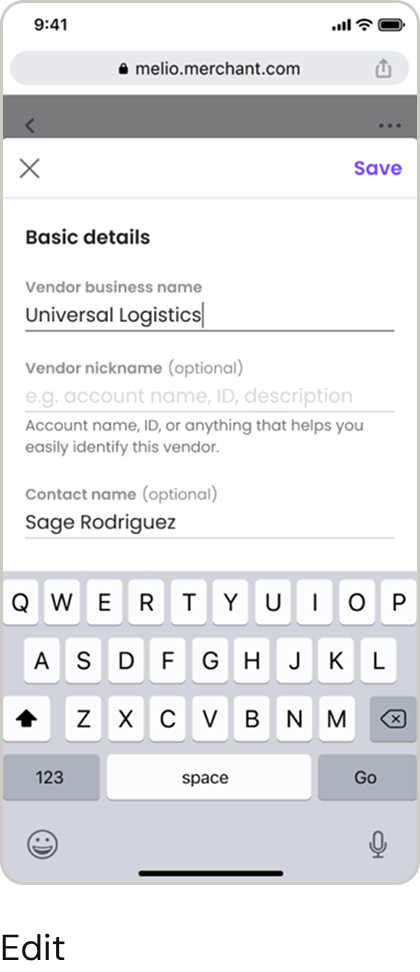


Measuring success
Adaptation is not translation
User engagement was not only unaffected — it improved by 7%. More users initiated payments, and approval-workflow usage increased by 4%. Beyond the numbers, the process left two clear lessons:
- •Mobile optimization means adapting to user behavior, not shrinking desktop elements.
- •Deliberate platform trade-offs delivered a lean, high-performing tool.